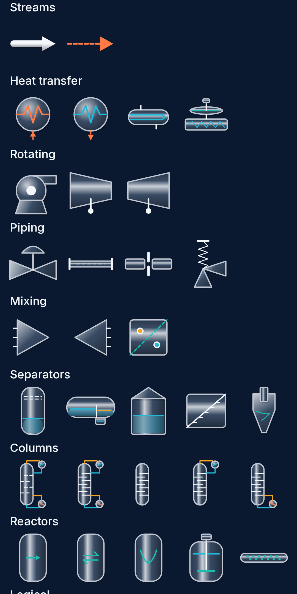

Flowstead
PROCESS ENGINEERING WORKBENCH
Ever thought of having a process simulator in your pocket?
Draw a flowsheet with your finger, solve it on the phone with the DWSIM engine, then size, check and document it. Steady state and dynamics.


Steady state & dynamics
PID control loops
Columns & reactors
API 520 / 521 relief
Equipment sizing
PFD & H&MB export
Free & open source (GPL-3.0) · Powered by DWSIM · github.com/HazemMancy/Flowstead